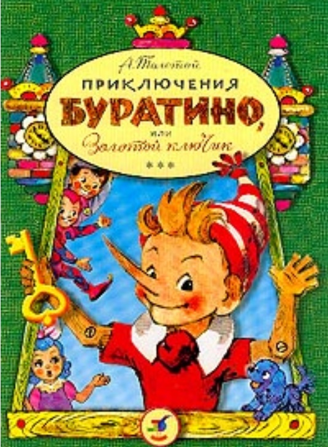

Толстой, А. Н. Золотой ключик, или приклю-чения Буратино : [для младшего возраста] / А. Толстой ; худож. А. В. Кокорин. - Москва : Советская Россия, 1986. - 108, [2] c.

Алексей Толстой
(1883 - 1945)
«Когда я был маленький — очень, очень давно, — я читал одну книжку: она называлась «Пиноккио, или Похождения деревянной куклы» (деревянная кукла по-итальянски — буратино). Я часто рассказывал моим товарищам, девочкам и мальчикам, занимательные приключения Буратино. Но так как книжка потерялась, то я рассказывал каждый раз по-разному, выдумывал такие похождения, каких в книге совсем и не было.
Теперь, через много-много лет, я припомнил моего старого друга Буратино и надумал рассказать вам, девочки и мальчики, необычайную историю про этого деревянного человечка».
Алексей Толстой
Обложка книги 1936 года
Designed with Mobirise free maker